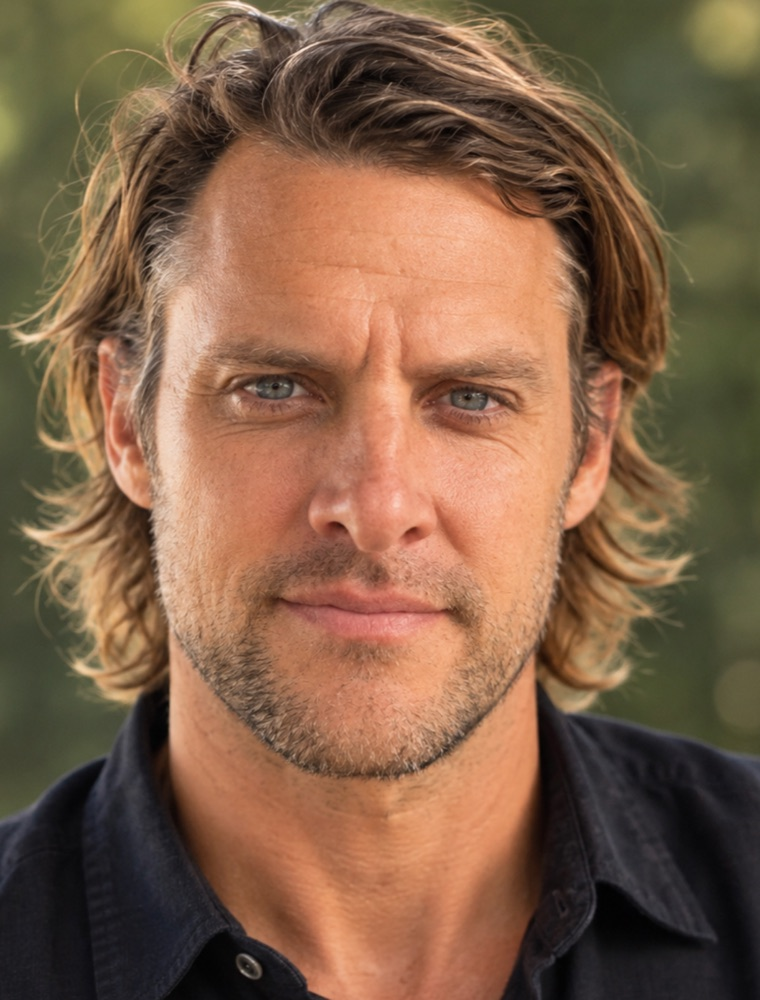

What we do
Bespoke AI work, built around how your business runs.
We're a full-stack AI and data science consultancy, so we can reach for whatever your problem actually needs. We run our own business on the tools we build, automating our own mundane email work, so we know what living with automation is like. We also go much deeper: forecasting the numbers you plan around, allocating your resources with linear optimization, and building agentic systems that reason through problems on their own. Between us, in past roles, we've shipped production code on enterprise systems and provisioned the cloud infrastructure it runs on. Bring us in, and we'll find the right solution for your business.
Everyday automation
Connect your tools, automate the busywork and get plain answers from your own data, often within days. We can set it up on your own computer and teach you along the way, so you can automate your next workflows yourself.
Full production systems
Infrastructure, data pipelines, forecasting, optimization and custom models. We take a system from the first idea all the way to running in production, then stay on to keep it running.
Domain knowledge
The AI models themselves, enterprise data and green tech, from direct experience. Between us, we've studied how AI language models work on the inside, trained and fine-tuned our own, shipped production systems on enterprise data, and co-built the software that ran large grid batteries in Texas. So we know the data, the models and what's at stake.
Cut through the AI hype
New AI products launch every week, and many of them just churn out slop. We know how the models behind them work and we test them ourselves, so you only get the ones that really fit your business. And we'll say so when a spreadsheet would do.
AI education
We teach your whole team, from engineers to people who have never written a line of code. Developers learn to build with AI agents, the way we work ourselves. Everyone else learns to hand the slow parts of their day to AI, so work that took days takes hours.
What we build
Everyday automation on top. A full system underneath.
What your team touches every day is the top of a build: questions answered, repeat work done, reports written. On the tools you already have, that can be the whole job. When you need more, such as data you can trust, a forecast to plan around or a model trained for your work, the build goes deeper. We build every layer ourselves.
On top what your team uses every day
Ask your business anything
Who hasn't booked since spring?
What sold best last month?
Plain answers from your own data.Repeat work, done for you
New inquiries answered and booked in. Lapsed customers, unpaid invoices and open quotes followed up before they slip.
Reports that write themselves
Sales, bookings and cash each week, put together from your own systems.
Screens your team will use
Dashboards and tools built around how your team works, from the database to the screen.
Underneath the system that runs it
Agents on the live system
Jobs and agents that watch your running systems and act on them: alerts, reports and controls, with a person signing off where it matters.
Models, chosen and trained
We benchmark models against each other on your own task, so you get the one that fits. When off-the-shelf AI isn't enough, we fine-tune one on your data and test it before it goes live.
Operations
Scheduling, dispatch, routing and pricing, worked out as optimization problems inside your software, so each decision is the best one your real constraints allow.
Forecasting
Demand, load, prices, staffing and cash, forecast from your own numbers so you can plan ahead.
Your data in one place
Frontier weather data, sensors, market feeds, APIs and your own paperwork, collected reliably into one place you can trust.
Deployment
Databases, data pipelines, monitoring, backups and security, set up and documented.
Infrastructure
Cloud, on-site or at the edge. We pick what fits your load and your budget, so you buy only what you need.
We build for operations, logistics, agriculture, manufacturing, and energy and green tech.
Who we are
Two people. You talk to the ones doing the work.

Bo Olsen
Physicist turned AI researcher. A high-energy physicist trained at the Niels Bohr Institute at the University of Copenhagen, he held appointments at CERN and Lawrence Berkeley National Lab studying the quark–gluon plasma, the matter that filled the universe moments after the Big Bang. He then co-built the software that ran three of the top-performing large grid batteries in Texas. Now he trains software developers and data scientists to build with AI agents, or as he puts it, to level up.
Elijah Molenkamp
Cognitive scientist, specializing in how AI models work. At the University of Amsterdam he studied what happens inside AI language models by comparing them with recordings of the human brain. He trains and fine-tunes models himself and has benchmarked many against each other, so he knows which model fits a job, where it will go wrong, and how to explain both in plain English.
LinkedIn
How we work
Built in stages, then kept running.
- StartA first series of calls
We learn how your operation runs and where it loses time or money, and tell you honestly whether we can help.
- ThenA scoped proposal
What we'd build, in what order and what each stage costs.
- BuildOne stage at a time
Each stage is scoped and priced on its own, and leaves you with something running. A first build often takes days to a few weeks and a full system several months, depending on how quickly we get access to your tools.
- HandoverYou own everything we make
Working software, not slides: set up, documented and handed over, and yours to keep.
- AfterWe stay on
A monthly retainer keeps it running, fixes what breaks and builds the next stage, with the same two people who built it. Staying on is your choice.
Pricing
What it costs.
Every project is quoted after a first series of calls, but you should know the range before you get in touch. These are examples, not quotes. The usual shape is a build, then a retainer.
A first series of calls
Free
A few calls
You find out whether we can help and, if we can, you get a scoped proposal with a price for each stage.
An everyday automation
$1,000–$5,000+
Usually days to a few weeks
A series of workflows on the tools you already use.
A connected setup
$10,000–$25,000+
Usually several weeks
Several tools joined up into one database of your own, with an AI agent on top that answers questions about your business and writes your reports.
A full production system
$25,000–$50,000
Several months, in stages
Infrastructure, data, and forecasting or optimization, built and deployed. Bigger systems are quoted on scope. A system like this usually continues on a retainer.
An ongoing retainer
$500–$5,000+ a month
Ongoing
Priced by how fast you need us to respond and how much time you want: from a few hours of support or AI education a month, up to one of us working with you every week to run the system and build the next stage.
Contact